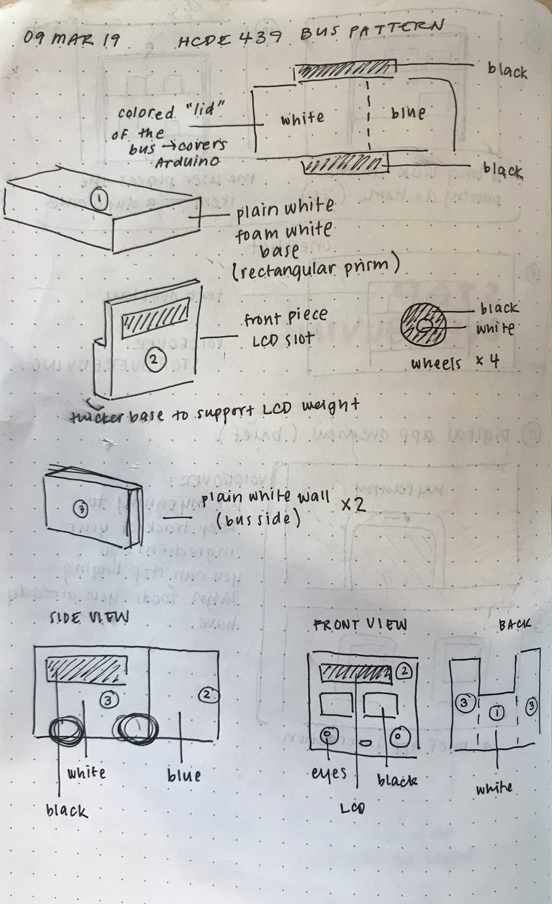

Reine's Final Project: Bus Buddy
Background
As a commuter, I take the bus and light rail almost daily. I spend approximately 1.5 hours to get to campus in the morning, 40 minutes walking and light-railing to work (and another 30 going back from work to campus, and 1.25 hours to get home. Considering how I'm spending approximately 4 hours each day just getting from one place to another, I've grown fascinated and passionate about the Greater Seattle Area's public transit system.
Concept
This new final project concept is a bus plushie so that I can feel connected to Community Transit even when I'm home because I just can't get enough of commuting (/s). It features an LCD screen on the front that displays various messages, just as we see on real-life buses that list their route number on the front. In this version, we will be using the WSDOT API to find out how long it will take me to get to Seattle from my home (the Everett-Seattle travel time). This information will be displayed on the LCD screen.
Final Project Sketches

Bill of Materials
- LCD screen
- Felt, sewing thread, foam for filling
- Wires + wires w/ male and female ends
- Potentiometer
- Small breadboard
Technical Implementation
Circuit

The system is quite simple as most of the work was in the code. This image was borrowed from circuitbasics.com
Schematic
The display is composed of an LCD screen as an output and the potentiometer as an input (to set the backlight brightness.)
Making the Bus
I created sewing plans for the bus such that it would have a slot to store the electronic materials. I wanted it to be easy to remove in the event that I would want to wash Bus Buddy.

I used different colored felts to give it that classic Community Transit look, sewing in appliqués for the face, windows, and wheels.

The Arduino is enclosed at the top of the bus, covered by the roof, which is a simple felt flap.
From Python to Arduino
I wrote python code to get data from the WSDOT API, which prints onto serial as bytes. Arduino code then reads that information, converts it into a string, and prints it out on the LCD screen. As the API frequently refreshes the traffic time, the code calls for the API data every 10 seconds and updates the display.
You can see how everything works together in the following video: https://www.youtube.com/watch?v=1uqsSxNkqOE
Arduino Code
// Reine Abubakar
// HCDE 439
// Final Project: Bus Buddy
// This project uses the WSDOT API to find travel times between Seattle and Everett
// This Arduino code takes the information printed by the corresponding python file
// and prints it onto the LCD screen
#include
LiquidCrystal lcd(12, 11, 5, 4, 3, 2); // Sets up the LCD pins
const byte buffSize = 32; // creates a buffer size for interpreting characters
char inputSeveral[buffSize]; // space for 31 chars and a terminator
byte maxChars = 12; // a shorter limit to make it easier to see what happens
char travelTime[32];
char line1[15] = " minutes";
char line2[15] = "Everett>Seattle";
// Runs once you press reset or power the board
void setup() {
Serial.begin(9600); // opens serial port, sets data rate to 9600 bps
lcd.begin(16, 2); // initializes lcd screen
lcd.setCursor(0, 0); // positions lcd text
}
// Runs over and over again
void loop() {
printDisplay(); // prints new display when new information arrives
readSeveralChars(); // reads the information from API sent through Python
delay(10000); // waits 10 seconds before updating the information
}
// Reads the serial monitor where information from the API will be sent
// This function was drawn from http://forum.arduino.cc/index.php?topic=236162.0
// It is a slightly modified version to fit my project
void readSeveralChars() {
// reads all the characters in the input buffer
// if there are too many for the inputSeveral array the extra chars will be lost
inputSeveral[0] = 0; // makes inputSeveral an empty string with just a terminator
byte charCount = 0; // the number of characters actually received - some may be lost
byte ndx = 0; // the index position for storing the character
if (Serial.available() > 0) {
// runs when there is information available in the serial monitor
// keep going until buffer is empty
while (Serial.available() > 0) {
if (ndx > maxChars - 1) { // -1 because arrays count from 0
ndx = maxChars; // extra chars are dumped into last array element, overwritten by terminator
}
inputSeveral[ndx] = Serial.read();
ndx ++;
charCount ++;
}
// makes sure the terminator is not written beyond the array
if (ndx > maxChars) {
ndx = maxChars;
}
// add a zero terminator to mark the end of the string
inputSeveral[ndx] = 0;
}
// prints the series of characters (string) to serial (to check the information
Serial.print(inputSeveral);
Serial.println(" min from Everett to Seattle");
}
// Prints information to the LCD display
void printDisplay(){
// Prints the travel time and start location
lcd.setCursor(0,0);
lcd.print(inputSeveral);
lcd.print(line1);
// Prints second line and end location
lcd.setCursor(0,1);
lcd.print(line2);
}
Python Code
# Reine Abubakar
# HCDE 439
# Final Project: Bus Buddy
# This project uses the WSDOT API to find travel times between Seattle and Everett
# The information is printed to the serial monitor where the connected Arduino displays it
import urllib.request, urllib.error, urllib.parse, json, serial, time
import traffic_key # Imports my unique API AccessCode (not uploaded/disclosed)
portName = '/dev/cu.usbmodem14101' # the arduino port name
ser = serial.Serial(portName, 9600) # sets serial port to 9600bps
time.sleep(3) # 3 second delay to reset arduino
# Gets JSON data from API based on the generated URL from def wsdotREST
# If there is an error, it returns the type of error
def safeGet(url):
try:
return urllib.request.urlopen(url)
except urllib.error.HTTPError as e:
print("The server couldn't fulfill the request.")
print("Error code: ", e.code)
except urllib.error.URLError as e:
print("We failed to reach a server")
print("Reason: ", e.reason)
return None
# Gets JSON about the travel times from various parts of the Greater Seattle Area
# Help documentation here: http://wsdot.wa.gov/traffic/api/TravelTimes/TravelTimesREST.svc/Help
def wsdotREST(baseurl = 'http://www.wsdot.gov/Traffic/api/TravelTimes/TravelTimesREST.svc/GetTravelTimesAsJson',
api_key = traffic_key.key,
params={},
printurl = False
):
params['AccessCode'] = api_key
# Concatenates the base URL with the access code parameter
url = baseurl + "?" + urllib.parse.urlencode(params)
# Prints out the URL if I want to print it to check if it is correct
if printurl:
print(url)
# Returns the information (in this case JSON) from the URL by calling SafeGet
return safeGet(url)
# Interprets the information from JSON called in wsdotREST()
# Gets the time it takes to travel between Everett-Seattle
# Writes this available information on the serial monitor
# Returns None if there is no information available
def getTraffic():
# Gets the JSON information
trafficFlow = wsdotREST()
# If there is JSON available
if trafficFlow is not None:
# Parses the JSON data and creates variables for the travel times
info = json.loads(trafficFlow.read())
southboundTravelTime = 0;
northboundTravelTime = 0;
# Goes through data to find the Everett-Seattle trips
for trip in info:
if trip['Name'] == 'Everett-Seattle (SB AM)':
southboundTravelTime = trip['AverageTime']
if trip['Name'] == 'Seattle-Everett (NB PM)':
northboundTravelTime = trip['AverageTime']
# Casts the travel times as strings
southTravel = str(southboundTravelTime)
northTravel = str(northboundTravelTime)
# Prints out the travel time details
print(southTravel + " min from Everett to Seattle")
print(northTravel + " min from Seattle to Everett")
# Writes out the travel time details on the serial monitor where Arduino can see!
northByte = northTravel.encode('utf-8')
southByte = southTravel.encode('utf-8')
# I am primarily concerned with southbound traffic times, so I will only print that
# If I were to bring BusBuddy with me to campus, I would change this to print northByte
ser.write(southByte)
else:
# If there is no information available, returns None
return None
# Gets the time between Everett-Seattle southbound
while True:
getTraffic()
time.sleep(10) # Delay 10s cause sis traffic isn't gonna change that quick (and i dont want wsdot coming after me)